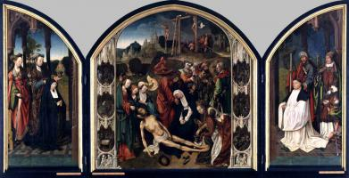
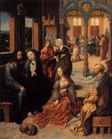

index
/
English
Cornelis Engebrechtsz.
(1462 - 1527)
Virgin and Child with St Anne
1500
Virgin & Child

Lamentation Altarpiece
1510
Lamentation over Christ
Crucifixion Altarpiece
1510
Crucifixion
Christ Taking Leave of his Mother
1515
Passion of the Christ

Christ in the House of Martha and Mary
1515
Ministry of Jesus
The Lamentation
Lamentation over Christ
English
|
Русский
|
Українська